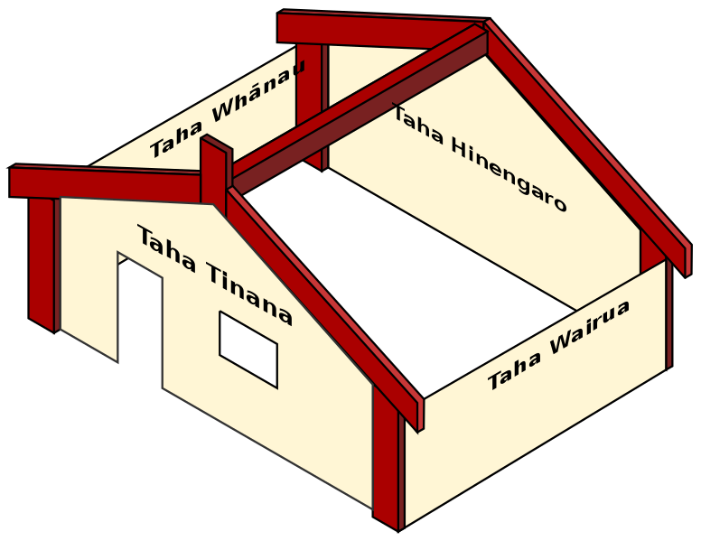

Shae Jacob's Blog
Shae Jacob's Blog

Te whare tapa whā and wellbeing
24th june 2024
What is Te whare tapa whā?
Te Whare Tapa Whā is a model of the 4 dimensions of wellbeing developed by Tā Mason Durie in 1984 to provide a Māori perspective on health. The 4 dimensions are: taha tinana (physical wellbeing) taha hinengaro (mental wellbeing) taha wairua (spiritual wellbeing) taha whānau (family wellbeing). I'll be using this model to create a plan around each area and how I can improve it for myself.
>Taha Tinana (physical wellbeing)
List of things I want to improve with my Taha Tinana
- Having a strict sleep schedule, sleeping before 12AM and waking up before 8AM
- When bootcamp starts, walking to classes instead of busing
- Spreading out my meals instead of eating once or twice a day
- Taking vitamins in the morning.
- Start going back to the gym.
- Creating a skincare routine.
Taha Hinengaro (emotional and mental wellbeing)
List of things I want to improve with my Taha Hinengaro:
- Being more mindful.
- Practicing and looking more into Neuroplasticity.
- Working on developing a Growth mindset.
- Opening myself more in social settings.
- Taking time out for myself.
- Discovering myself emotionally.
Taha Wairua (spiritual wellbeing)
List of things I want to improve with my Taha Wairua:
- Having a purpose.
- Become more grounded with who I am.
- looking more into my family and where I come from.
- Taking time out of the day to reflect more.
Whenua (land)
List of things I want to improve with embracing the Whenua:
- When back in my hometown I want to recognize the Whenua more.
- Go back to important places to me throughout my childhood
- Go outside more often
- Travel more around Aotearoa.